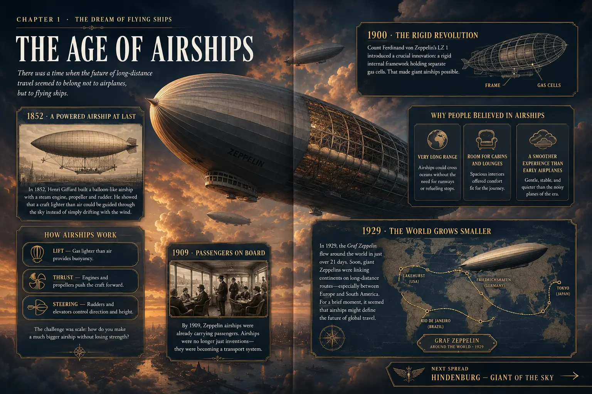

History they can step inside.
They don’t just see Hindenburg. They board it.
First-person scenes move through passenger decks, hidden crew spaces and the control car during the final Atlantic crossing.
History Hunters · Book Two
You are crossing the Atlantic.
The journey ends at Lakehurst.
Explore the giant Zeppelin from the inside—then follow the disaster second by second.
Move to explore · Click to look inside
“He came for the fire. He stayed to learn how the whole airship worked.”More reviews ↓
See inside the book
The book opens as you reach it. Use the arrows or chapter markers to explore four real interior spreads.

Swipe to turn
See how powered flight grew into the immense rigid airships of the 1930s.
Spread 1 of 4
Why readers enjoy it
Three reasons young readers keep turning the pages.
History they can step inside.
First-person scenes move through passenger decks, hidden crew spaces and the control car during the final Atlantic crossing.
Engineering made visible.
Cutaways and diagrams reveal gas cells, controls, engines, navigation and the people who kept the airship flying.
Tension without sensationalism.
The fire, escape and rescue unfold moment by moment, with no gore and careful distinction between evidence and uncertainty.
Reader reviews
“My 11-year-old knew the crash, but had no idea the airship was essentially a flying hotel. The cutaways had him studying every room.”
“The timeline makes the last half-minute easy to follow without turning the tragedy into spectacle.”
“My son usually skims nonfiction. Here he kept stopping to explain the engines, gas cells and navigation to us.”
“Dramatic, but never graphic. It respects the people aboard while still giving young readers the tension they expect.”
“After finishing, both children wanted to know what investigators believed caused the fire—and why passenger Zeppelins disappeared.”
Frequently asked
The fire, escape and rescue are presented with real tension, but there is no gore or graphic depiction of death. The treatment is designed for readers ages 10 and up.
It is visual nonfiction with immersive first-person framing. Reconstructed viewpoints place readers aboard, while diagrams, maps, timelines and documented evidence explain what happened.
Yes. Aviation history, engineering, navigation and investigation make it a useful enrichment book or starting point for a project.
No. Readers explore the age of airships, Hindenburg’s design, passenger and crew life, the Atlantic crossing, the final fire and the investigation that followed.
Yes. It is part of History Hunters, alongside Pompeii: The Last Day and I Worked for Abraham Lincoln.
Bring the final flight home
Give a curious reader a front-row journey across the Atlantic—and through the final seconds that changed passenger flight forever.
 Paperback · Ages 10+View on Amazon↗You’ll continue securely on Amazon.
Look inside again ↑
Paperback · Ages 10+View on Amazon↗You’ll continue securely on Amazon.
Look inside again ↑